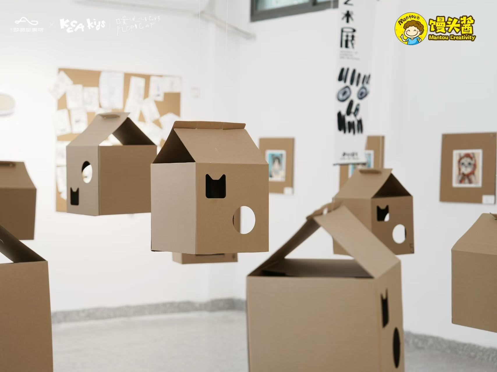
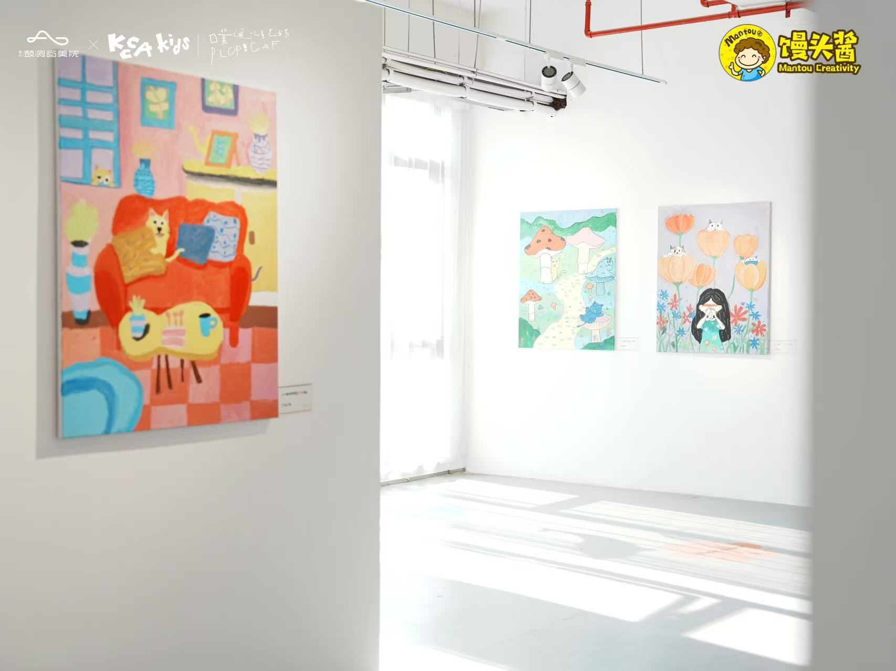
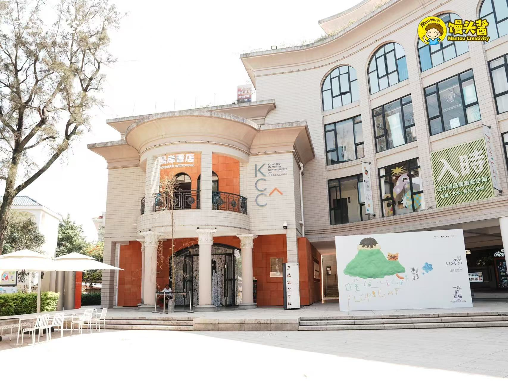
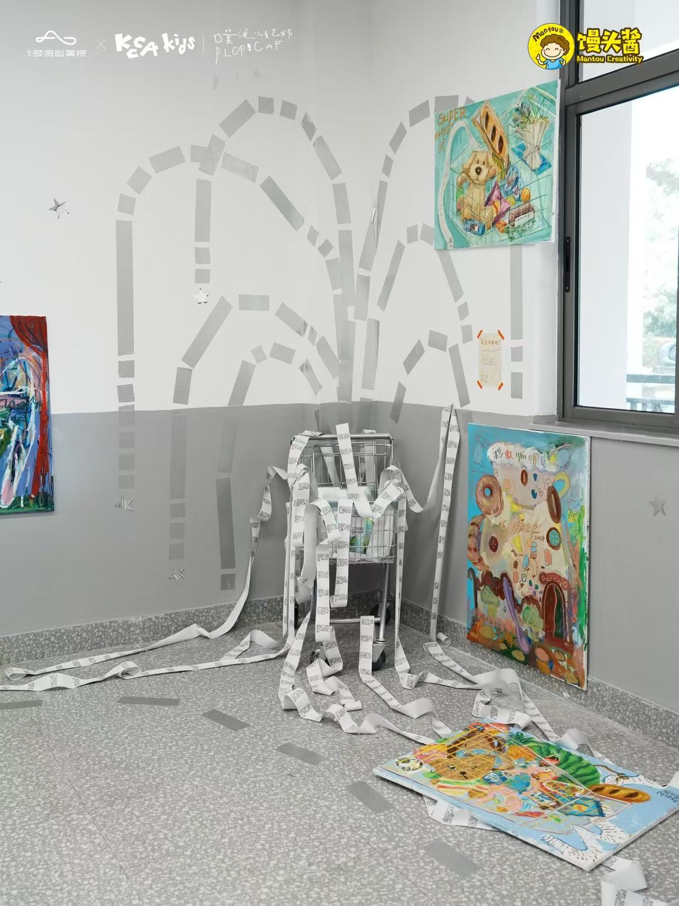
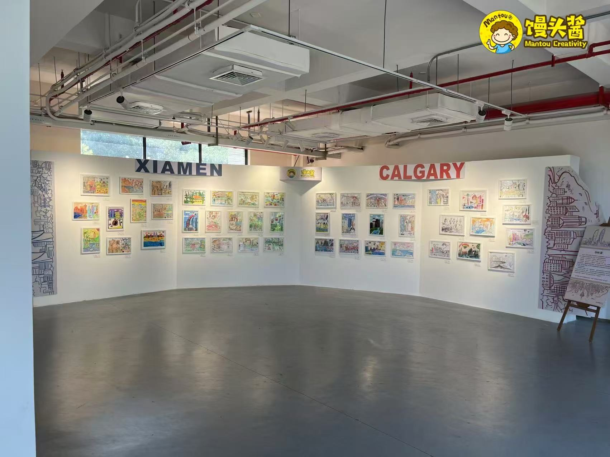
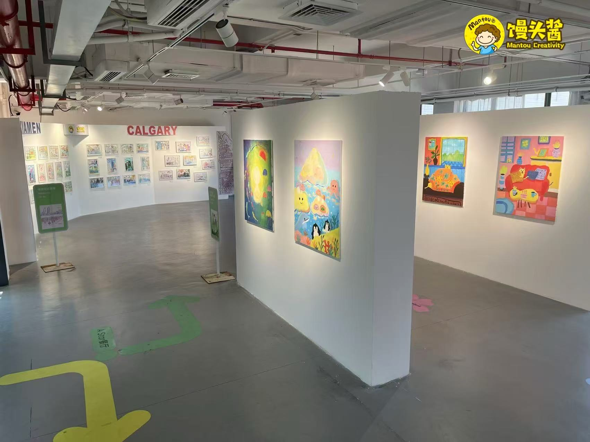
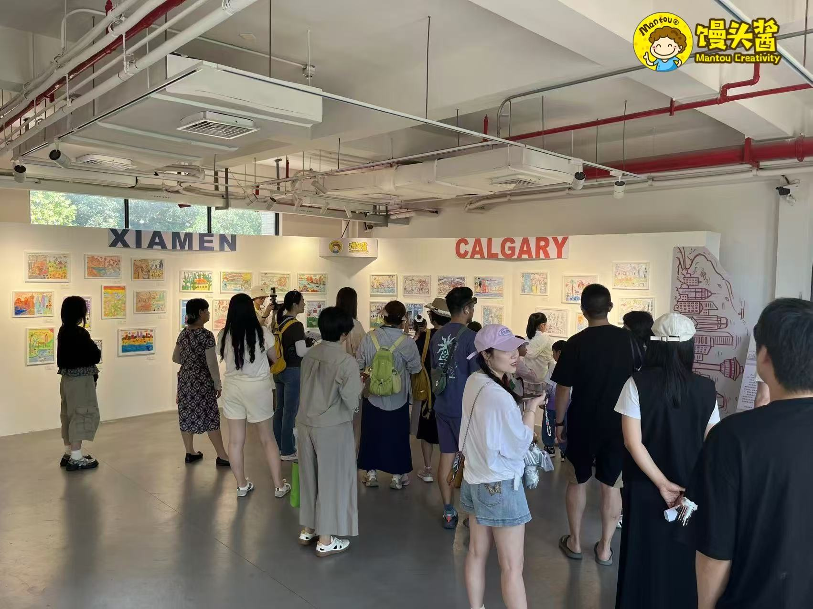

01 · Exhibition
Exhibition / 展览
In the second edition of Putong Children's Art Festival, Mantou Art Studio and its students joined the exhibition under the theme "Searching for Twin-City Stories." Children from Xiamen, China and Calgary, Canada used drawing to portray their own cities and tell stories between the two places.
第二届噗通儿童艺术节，馒头酱和学员们参与展览，主题为“寻找双城故事”。中国厦门孩子和加拿大卡尔加里孩子用画笔描绘各自城市，描绘双城故事。






